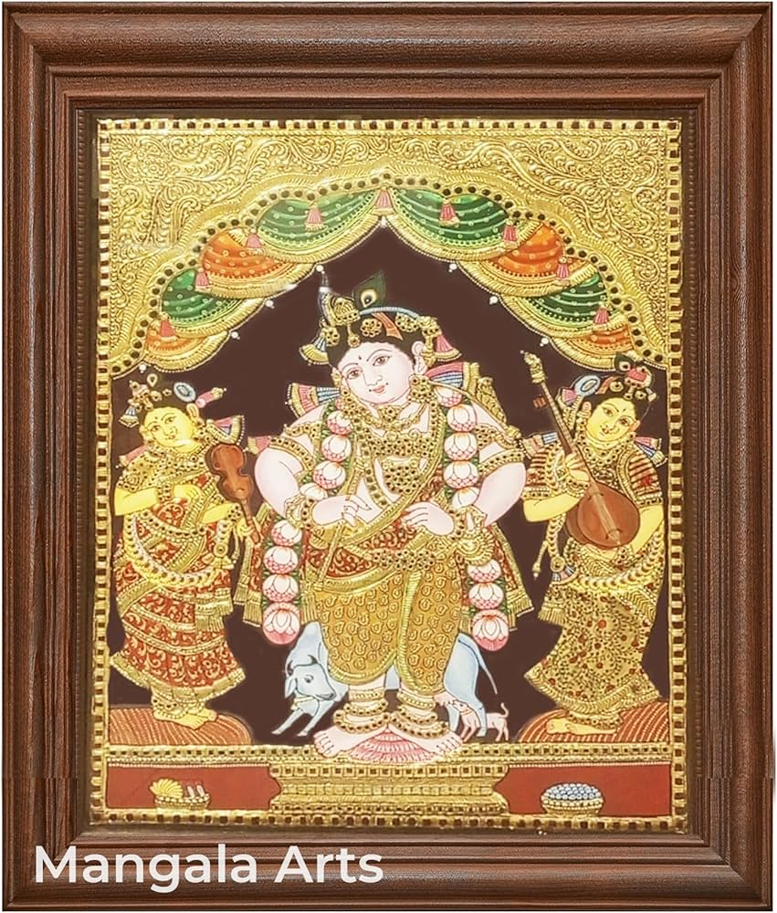

Tanjore paintings feel like divinity shining through gold and color. The central figures—gods and goddesses—are not just painted, they almost glow, surrounded by rich ornamentation and symmetry. The romance here is deeply devotional and majestic. It’s about surrender, faith, and reverence. The gold doesn’t just decorate—it elevates the painting into something sacred. Looking at it feels like standing in front of a deity—calm, powerful, and full of grace.
Tanjore (Thanjavur) painting developed in Tamil Nadu during the rule of the Maratha rulers of Thanjavur. • Flourished between the 16th–18th centuries • Influenced by earlier Chola and Vijayanagara traditions • Created mainly for temples and royal patronage The paintings primarily depict: • Hindu deities like Krishna, Lakshmi, Ganesha • Mythological scenes They were meant for worship and spiritual connection, not just decoration.
Tanjore paintings are famous for their rich texture and gold work: • Gesso Work (Relief Work) A paste is used to create raised surfaces for jewelry and ornaments • Gold Foil Application Real gold sheets are applied, giving a glowing effect • Use of Gemstones / Glass Pieces Embedded to enhance richness • Bold, Bright Colors Red, blue, green backgrounds with strong contrast Centralized Composition Main deity placed in the center for focus and symmetry
Tanjore paintings were created by skilled artisans and temple artists. • Worked under royal and religious patronage • Skills passed through families and guilds • Required mastery in both art and religious symbolism Even today, artists continue this tradition, keeping its classical essence alive.